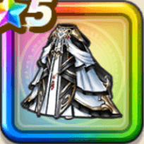

異界の賢者のドレス下
攻略班 9.5点 / 麻痺耐性+5%迅雷天ミカヅチへの耐性+10%封印耐性+5%麻痺耐性+5%封印耐性+10%じゅもんダメージ+7%【朝/昼/夕】じゅもんダメージ+3%
くわしい特徴
【レベル別習得スキル】 Lv1麻痺耐性+5% Lv5迅雷天ミカヅチへの耐性+10% Lv8封印耐性+5% Lv10じゅもんダメージ+7% Lv12【朝/昼/夕】じゅもんダメージ+3% Lv15魔力の暴走率+3% Lv18【夜間】魔力の暴走率+2% Lv20麻痺耐性+5% Lv23さいだいMP+5 Lv25封印耐性+10% 【限界突破スキル】 1凸攻撃魔力+12 2凸すばやさ+12 3凸守備力+12 4凸さいだいHP+12